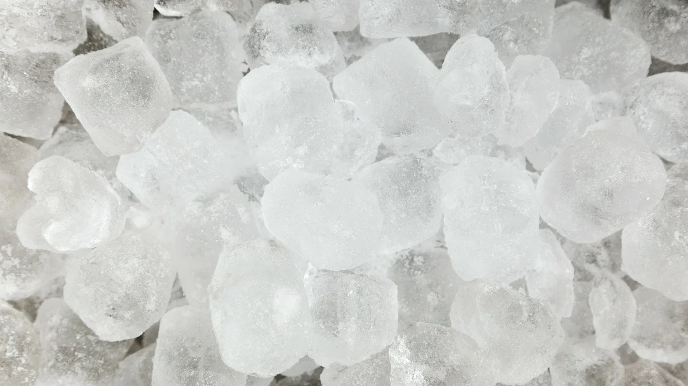

How to make Iced Tea
Iced tea is the best option for the hot season and not only. You can drink iced tea even during the winter in a warm atmosphere with your friends.
Ice cubes(source: Pixabay)
Instant tea for making iced tea
Making iced tea with instant tea is the fastest way possible because you do not have to wait for tea to cool down, as against tea bags. All you need is a good instant tea ready to hand.
Recipe:
Make sure that you have the following ingredients in your house:
-Instant tea
-Water
-Ice
-Sugar(optional)
-Fresh fruits(optional)
Preparation method:
Now, all you need to do is to fill a glass with water and add some instant tea and ice. If you want your drink to be sweetener you can add a teaspoon of sugar.
For extra-flavor you can add some fresh fruits. For example, if you drink lemon&lime iced tea, a bit juice of orange or lemon is the exactly thing that is missing for the best experience.
For bigger impact:
However, if you have a party or your friends are coming over, you can impress them by adding some slices of fruit as decoration for your iced tea.
It sounds so common, but trust me, it will make a big difference, because when something looks good, t is almost no chance not to be tasty. And we are confident that the taste of our tea won’t fail! So all you have to do is to make it look fancier when you serve it.
Article by Raluca-Andreea Calin